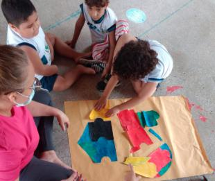
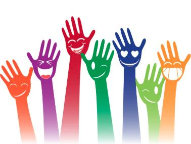

Educação Viva Educação
Atividades extracurriculares para crianças e adolescentes, com foco em leitura e cidadania.
Como participar: clique em cadastro e inscreva-se como voluntário.

Atividades extracurriculares para crianças e adolescentes, com foco em leitura e cidadania.
Como participar: clique em cadastro e inscreva-se como voluntário.

Mutirões e oficinas voltadas para sustentabilidade local.
Doações: apoio com materiais e recursos financeiros para organizar atividades.